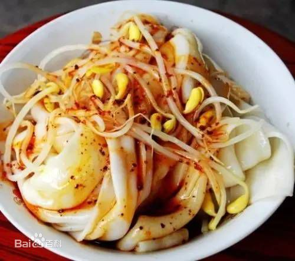
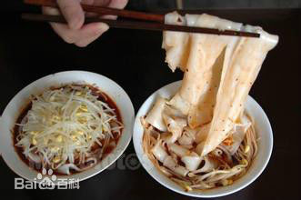
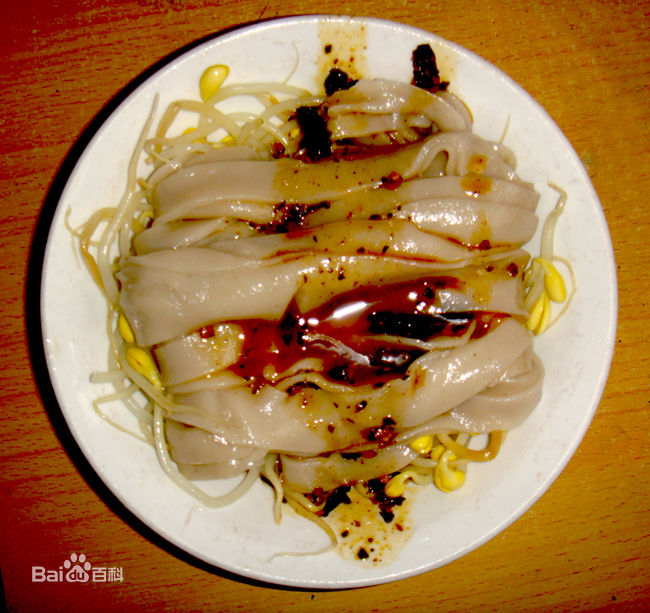
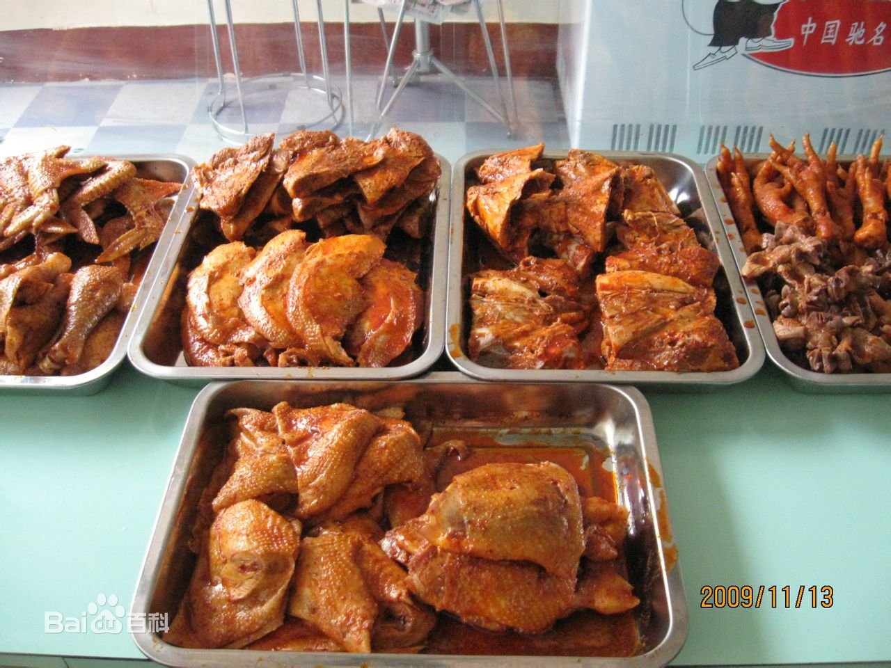
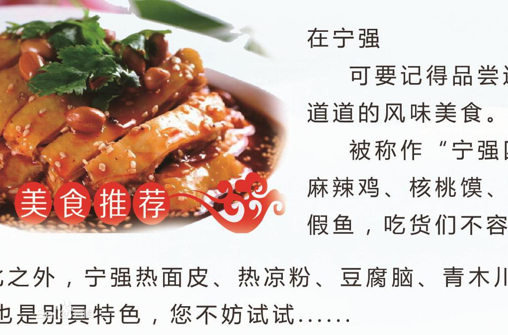
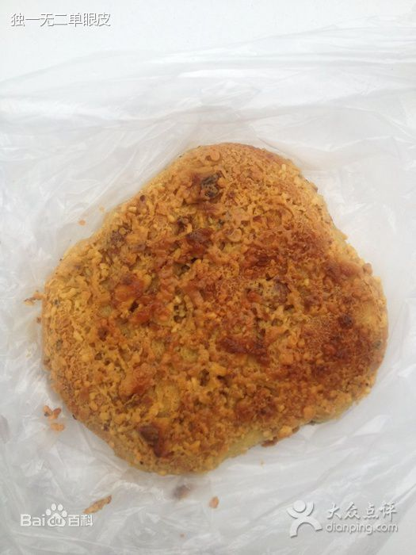
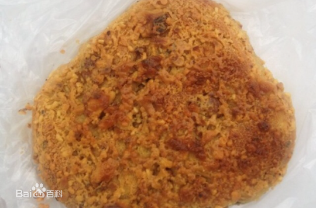

-
汉中面皮
汉中面皮（Hanzhong Mianpi），是陕西南部汉中地区著名特色小吃。相传始于秦汉，一般是把大米浸泡后磨成米浆，上笼蒸成薄皮儿，趁热抹上菜籽油，切成条状，依个人口味调入油辣子、味精、精盐、醋、酱油、蒜泥水等佐料，拌匀即可食用。 当地多热食，称热面皮，亦可置于通风处降温后凉拌（当地称冷面皮或凉面皮）。配菜（底垫子）主要有黄豆芽、土豆丝、黄瓜丝、胡萝卜丝、芹菜、菠菜等时令小蔬，口感软糯，香辣。不需即时食用时还可以晾干后油炸食用。也有烩，炒等吃法。 汉中面皮一般采用米浆为原料，偶尔也用面粉直接调浆（当地称“面面皮”），或在米浆、面浆中混入土豆淀粉或红薯淀粉增强韧性，未强调“面面皮”的均为米浆制作。
   -
宁强王婆麻辣鸡
麻辣鸡是陕西汉中宁强一种独具特色的传统风味小吃，属于凉菜。高档的宴席少不了它；老百姓的餐桌上时常见到它；朋友来了一定要吃它；给人馈赠也常常选它。它就是鼎鼎大名、享誉西北的宁强地方风味小吃王家麻辣鸡。王家麻辣鸡又名王婆麻辣鸡，2002年以当今掌案人王素云之名注册商标，全称是“王素云麻辣鸡”，上边有她的头像。
  -
宁强核桃馍
宁强核桃馍，陕西宁强著名的传统特色面食，将核桃仁去皮后与椒盐、芝麻等一起制成馅泥，再将油面经过三次发酵后，抹上核桃泥，放入烤炉里烘烤后制得的糕点。本品口感酥脆，味道香甜，特别适合老年人及儿童食用。
 